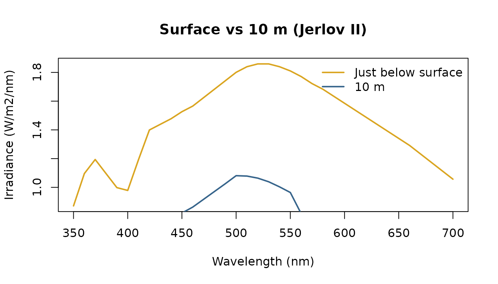
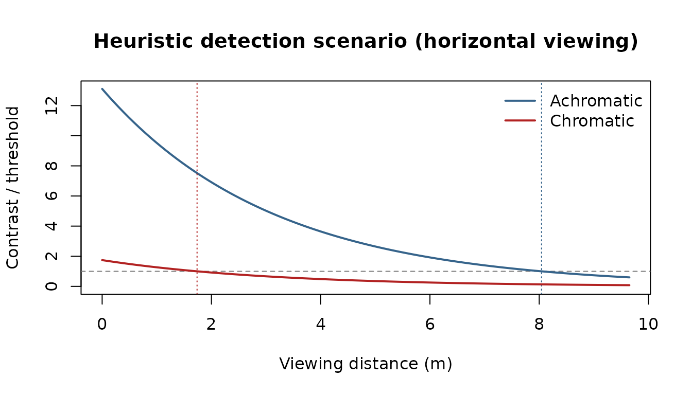

Seeing through water: from sunlight to detection
Source:vignettes/seeing-through-water.Rmd
seeing-through-water.RmdThis vignette runs a single question end to end: can a fish, at depth, detect a reddish object against the open-water background — and how far away? It chains the three stages luxR is built around:
- Sunlight to depth — cross the air–water surface and attenuate the solar spectrum through a Jerlov water type.
- Light to capture — what the fish’s photoreceptors actually catch, allowing for self-screening.
- Capture to detection — the inherent object/background contrast and the distance at which it falls below threshold.
1. Sunlight to depth
Start with the clear-noon solar spectrum just above the surface. A
flat air–water interface reflects a few percent of it away (Fresnel);
surface_transmittance() gives the fraction that actually
enters the water.
sp <- solar_irradiance("clear_noon") # W/m2/nm, above surface
lam <- sp$wavelength
tau <- surface_transmittance(angle = 30) # sun 30 deg from vertical
E_sub <- sp$irradiance * tau # just below the surface
round(tau, 3)## [1] 0.979Now propagate that subsurface spectrum down through Jerlov type II water with Beer–Lambert attenuation. The water is a strong spectral filter: red light is gone within a few metres, leaving a blue-green field at depth.
depth <- 10 # metres
at_10m <- light_at_depth("clear_noon", "II", depth,
wavelength_policy = "trim",
surface_source = "direct", surface_angle = 30)
lam_depth <- at_10m$lambda
supported <- lam >= min(lam_depth) & lam <= max(lam_depth)
E_10m <- at_10m$irradiance
E_sub <- E_sub[supported]
lam <- lam_depth
plot(lam, E_sub, type = "l", col = "goldenrod", lwd = 2,
xlab = "Wavelength (nm)", ylab = "Irradiance (W/m2/nm)",
main = "Surface vs 10 m (Jerlov II)")
lines(lam, E_10m, col = "steelblue4", lwd = 2)
legend("topright", c("Just below surface", "10 m"),
col = c("goldenrod", "steelblue4"), lwd = 2, bty = "n")
2. Light to capture
Here, quantum catch means the in-water photon irradiance weighted by
the receptor’s spectral sensitivity. It remains an area-normalised
quantity, not an absolute per-receptor photon rate. The sensitivity
itself is not the bare pigment template — a real outer segment is partly
self-screening, which broadens the effective curve.
receptor_absorptance() applies that for a chosen axial
optical density.
viewer <- "Danio rerio" # a tetrachromat
recs <- unique(subset(species_sensitivities,
species == viewer)$receptor)
lam_s <- seq(300, 750, by = 1)
catch <- sapply(recs, function(r) {
row <- subset(species_sensitivities,
species == viewer & receptor == r)
tmpl <- govardovskii_template(lam_s, row$lambda_max[1], row$chromophore[1])
S <- receptor_absorptance(tmpl, optical_density = 0.4) # self-screening
quantum_catch(E_10m, lam, S, input_unit = "W/m2/nm")
})
round(catch)## UV-cone S-cone M-cone L-cone
## 2.165623e+19 6.750210e+19 1.459543e+20 1.677082e+20The catches span almost an order of magnitude across the four cones — a direct readout of how much each receptor’s sensitivity overlaps the residual blue-green field at depth, rather than the broad, even excitation it would receive at the surface.
3. Capture to detection
Now the target. Give it a reddish reflectance and view it against a
flat grey background under the 10 m light field.
inherent_contrast() returns both an achromatic (brightness)
Weber contrast and a chromatic distance (ΔS, in JNDs) for the viewer’s
receptors.
grey <- rep(0.30, length(lam))
red <- 0.20 + 0.25 * exp(-((lam - 625) / 35)^2)
ic <- inherent_contrast(red, grey, E_10m, lam, species = viewer)
ic## $achromatic
## [1] -0.2622355
##
## $chromatic
## [1] 1.743446The default scenario assumes both scalar contrasts decay with
distance as veiling light replaces the object
(C(r) = C0 * exp(-c r)). This is a teaching heuristic, not
an empirically validated prediction of an animal’s actual detection
range. detectability() bundles the inherent contrast, the
threshold-distance estimate per channel, and the contrast-vs-distance
curve. We pass a real beam attenuation c = a + b rather
than the Kd * kd_to_c proxy.
c_beam <- beam_attenuation(absorption = 0.20, scattering = 0.12) # 1/m
Kd_ref <- jerlov_Kd("II", lambda = 490)
d <- detectability(red, grey, E_10m, lam, Kd = Kd_ref,
beam_c = c_beam, species = viewer)
d## <lux_detection> horizontal viewing, Danio rerio
## model: scalar contrast/JND heuristic scenario estimate
## validation: not empirically validated as an actual detection range
## achromatic: C0 = -0.262 (Weber) -> estimate 8.04 m (thr 0.020; crossed)
## chromatic : dS = 1.743 JND -> estimate 1.74 m (thr 1.00 JND; crossed)
plot(d)
Under this heuristic the two channels behave very differently. The
brightness (achromatic) difference stays above threshold for several
metres, while the colour signal — only just above 1 JND at zero distance
— washes out almost immediately as veiling light floods in. Detecting an
object by its colour underwater is demanding: it needs both photons and
inherent contrast to spare. Looking up (against the
brighter surface) extends the range, because the contrast-attenuation
coefficient becomes c - Kd:
detection_range(red, grey, E_10m, lam, Kd = Kd_ref, beam_c = c_beam,
species = viewer, channel = "achromatic",
direction = "up")$achromatic## [1] 9.638616For chromatic work, prefer the wavelength-resolved path model. It requires an explicit beam-attenuation spectrum and veiling radiance rather than treating a zero-distance JND as a scalar that decays exponentially. In this illustrative geometry, the grey background is also the asymptotic veiling field:
Kd_lambda <- jerlov_Kd("II", lambda = lam)
c_lambda <- 1.5 * Kd_lambda
veil <- grey * irradiance2radiance(E_10m, geometry = "lambertian")
d_spectral <- detectability(
red, grey, E_10m, lam,
Kd = Kd_lambda,
beam_c = c_lambda,
species = viewer,
model = "spectral_path",
veiling = veil,
max_distance = 50,
search_points = 201
)
d_spectral## <lux_detection> horizontal viewing, Danio rerio
## model: spectral-path scenario estimate
## validation: not empirically validated as an actual detection range
## achromatic: C0 = -0.262 (Weber) -> estimate 28.08 m (thr 0.020; crossed)
## chromatic : dS = 1.743 JND -> estimate 13.14 m (thr 1.00 JND; crossed)This remains a scenario estimate: the spectral calculation improves the path physics and receptor calculation, but it does not add target size, acuity, photon limits, behaviour, or empirical validation for the organism.
Summary
From a single sunlight spectrum we crossed the surface, propagated to
depth, computed photoreceptor quantum catches (with self-screening), and
turned the object/background spectra into a heuristic threshold-distance
scenario — the full light → capture → detection chain, each
step a documented luxR function.